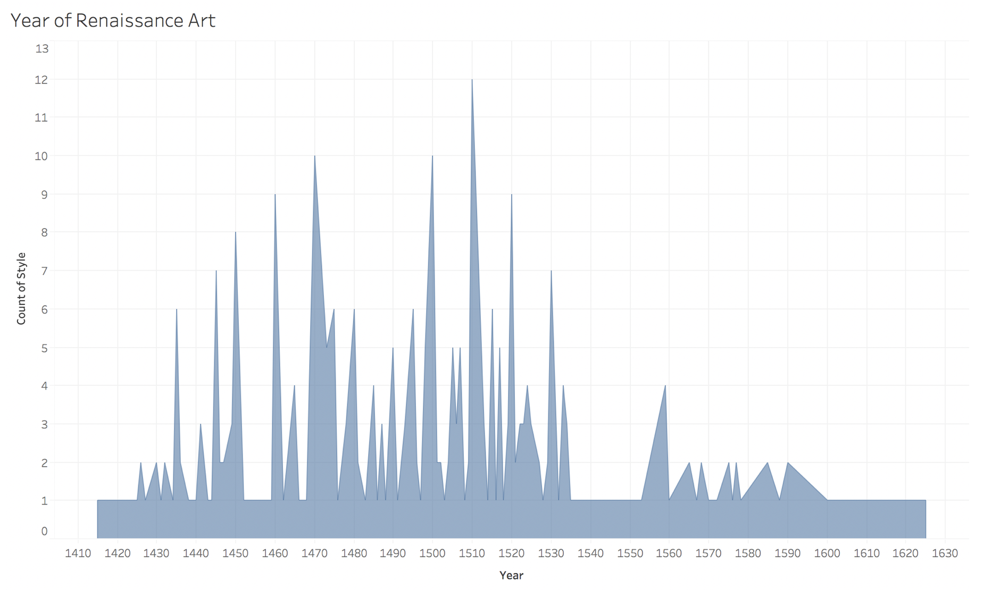
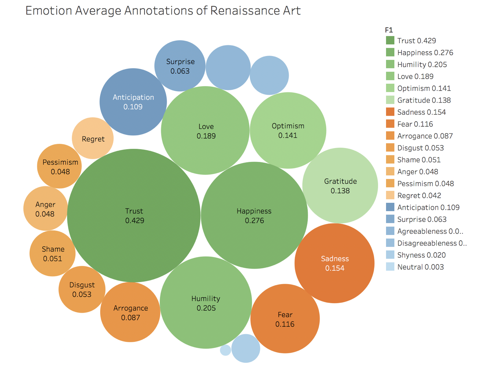
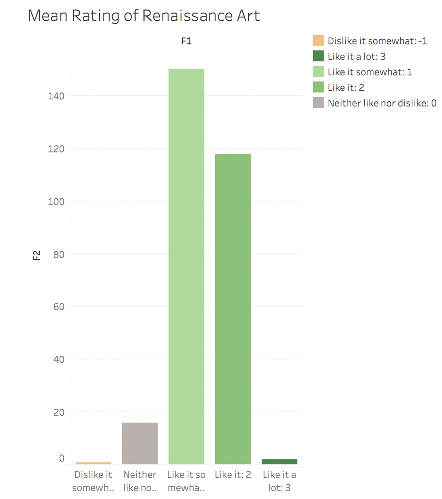

The Renaissance refers to the era in Europe from the 14th to the 16th century in which a new style in painting, sculpture and architecture developed after the Gothic.
Derived from the French word, renaissance, and the Italian word rinascità, both meaning ‘rebirth’, the Renaissance was a period when scholars and artists began to investigate what they believed to be a revival of classical learning, literature and art.
From the visualization, we can see the work of Renaissance Art the researchers choose are from year 1415 to year 1625, and it is obvious that year 1450 to year 1530 are the best years for Renaissance Art.


This bubble chart shows the emotion average annotations of Renaissance Art. The bubbles of green colors represent positive emotions; the bubbles of orange colors represent negative emotions; the bubbles of blue colors represent other emotions--mixed or neutral. The color inside each emotion type is from dark to light according to the average annotations.
From this chart, it is obvious that annotators provided the most consistent labels for positive emotions including trust, happiness, humility, etc. One possible reason can be that most renaissance arts reflect the theme and emotion of positive, because one idea during the Renaissance is that people were able to experience God directly and should have a personal, emotional relationship to their faith. God had made the world but humans were able to share in his glory by becoming creators themselves.
This bar chart shows How did the annotators like the piece on average (-3 (strongly dislike) to 3 (strongly like)).
The colors of green mean like, gray means neither like nor dislike and the colors of oranges mean dislike. The colors change from dark to light according to how much the annotators like the piece of art work.
The colors of green mean like, gray means neither like nor dislike and the colors of oranges mean dislike. The colors change from dark to light according to how much the annotators like the piece of art work.
We can come to the conclusion that work of Renaissance Art is liked by people.
